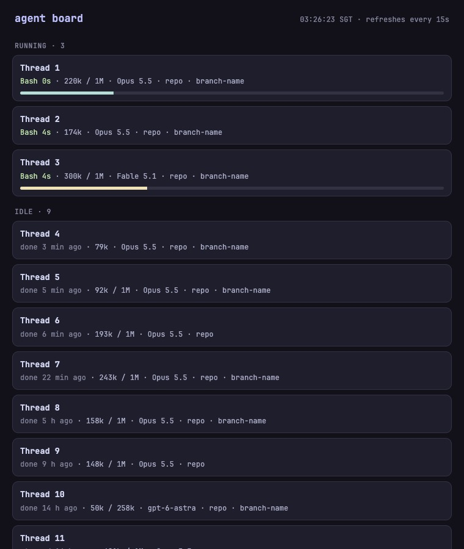
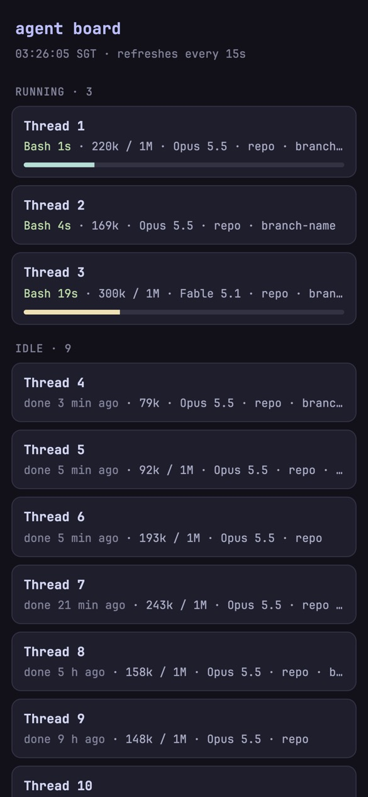
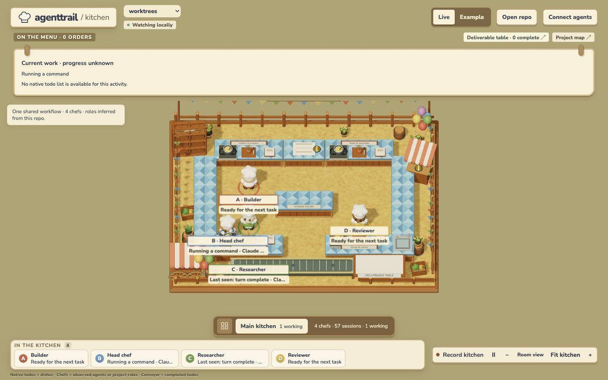
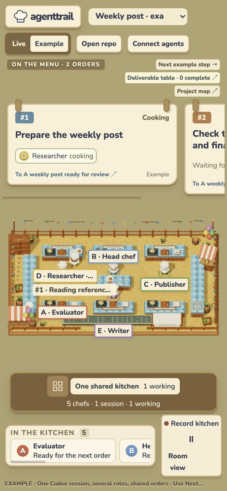

the owner chose all three recommendations at 03:04. The board is files/bin/agent-board.mjs, with a launchd agent in nix/user.nix and five fixture tests in tests/agent_board_test.mjs. It goes live at port 4790 on the Mac's MagicDNS name after the next rebuild.
Below is the real board at 03:26 on live T3 data, shown in the agent Chrome. Thread titles, repos and branches are replaced with placeholders; states, timings, context and models are real. Measured cost: about 0.15% CPU and 66 MB of memory over a minute of 15-second refreshes, 14 ms per page.


rebuild once this branch is merged to main. That starts the board's launchd agent.Decided at 03:04: build the board instead of agenttrail, bind it to the Tailscale address, and add agenttrail to the OPINIONS "tried and dropped" line.
No to agenttrail. Its Kitchen view is carefully built, stays local, and passed every safety check I ran. It answers a different question, though: what roles and todos exist inside one repo, drawn as a 3D cooking game. It cannot tell you which T3 threads are running, which are waiting on you, or how full their context is.
The Map view is worse for us. It runs one daemon per repo and needs a PLAN.md convention. Any web page you visit can trigger its setup endpoint, which edits CLAUDE.md and AGENTS.md and installs hooks.

~/.t3/worktrees. 57 Claude sessions from the last 24 hours collapse into 4 inferred "chefs": "Head chef · Claude +22", "Researcher · Claude +33". No thread names, no lanes, no context.
| What you need | agenttrail Kitchen | Proposed agent board |
|---|---|---|
| Which agents run, by thread and lane | Role chefs per repo. A session shows as "Claude", with no T3 title. | T3 thread title, lane, branch and model |
| Waiting on you | An agent waiting on an input card shows as "working". Hooks in every repo would help only partly. | Pending T3 input cards and approvals, listed first |
| Stuck | Not tracked | Running, but no log write for 10+ minutes |
| Context size | Not tracked | T3 already records used and max tokens per thread |
| Usage windows (5-hour, weekly) | Not tracked | Not in v1. T3 sessions expose no local source; see risks. |
| Many worktrees | 12 roots at most. We have 53 worktrees, and orchestrators run from ~/.t3/scratch. | Every open T3 thread, wherever it runs |
| From the phone | Hardcoded to 127.0.0.1, and it rejects any proxied Host header | Plain list page at a MagicDNS URL |
What already exists: T3 shows run state one thread at a time, and ~/orchestrator/status.mjs prints running threads and pending approvals as Markdown for the orchestrator. Neither puts every thread, with context and staleness, on one phone screen. docs/agent-team.md already plans exactly that as orch status; it hasn't been built. Other tools I checked: disler's hooks dashboard (no license, untouched since February, needs hooks in every repo) and ccusage (good token reports, but a CLI, not a board).
scripts/agent-board, Node 22 from the flake, no npm packages. It uses node:sqlite and node:http.statev2.sqlite read-only and selects explicit columns, never the webhook token or secret. It tails Claude logs only to get the last activity time, or context size when T3 has none. It writes nothing anywhere.nix/user.nix, next to the agent Chrome. It starts at login and restarts if it dies. It is live after your next rebuild.node --test) passes with a sample database and log.rebuild, and I push only after you say "push".agenttrail-kitchen@0.1.0-alpha.3 and agenttrail@0.2.0. Both npm tarballs match registry integrity. Source read at commit e4ba2da.connect-src 'self'. While it ran, it held no sockets except its listener.app.js from the pinned source and lockfile, and it came out byte-identical, fonts included.~/.claude/projects and ~/.codex/sessions. Full event bodies, the last 2 MiB, only for watched folders. It skips subagent logs.~/.agent-office/ (mode 0600), plus repo hooks only through "Connect agents". Map writes ~/.agenttrail/, and its init writes PLAN.md, CLAUDE.md, AGENTS.md, .gitignore and hooks.open, which means the default browser, unless given --no-open. The trial used --no-open and a logging stub for open, which was never called. I viewed it only in the agent Chrome.POST /setup and /spawn accept requests from any web page./tmp. Nothing was left in my home folder or any repo, and no hooks or settings changed.